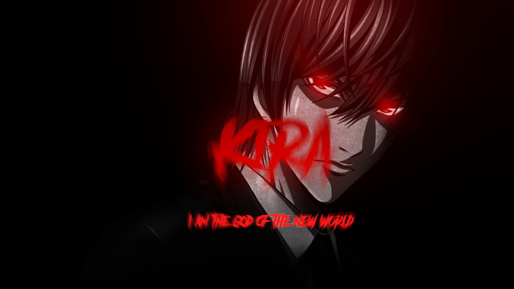

RYUK
Shinigami. Observer. Chaos Enthusiast.

Who is Ryuk?
Ryuk is a Shinigami who dropped his Death Note into the human world out of boredom. He is not a hero, nor a villain—only an observer entertained by human behavior.
Nature
Detached and unpredictable, Ryuk thrives on chaos and curiosity. His only real attachment: apples.